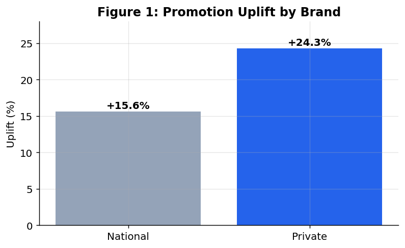
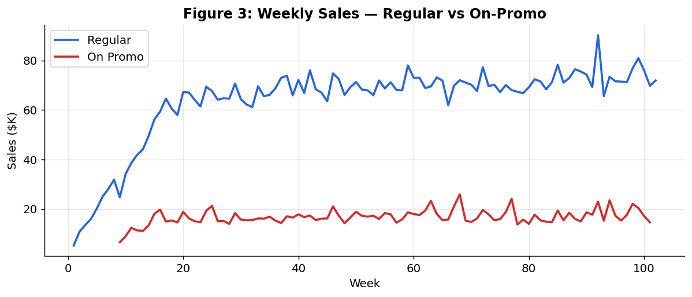
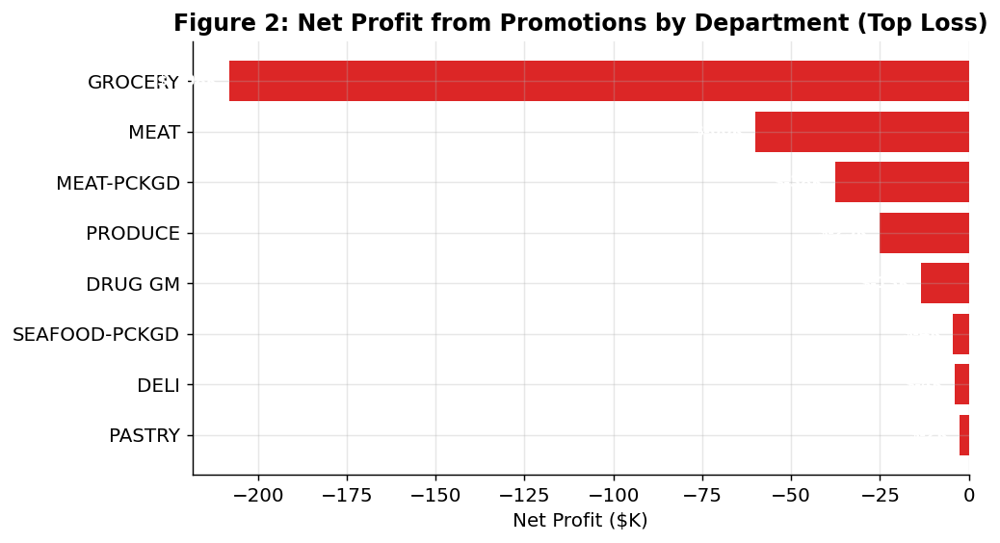
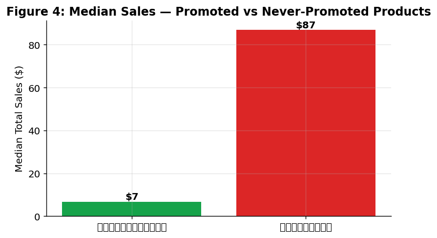
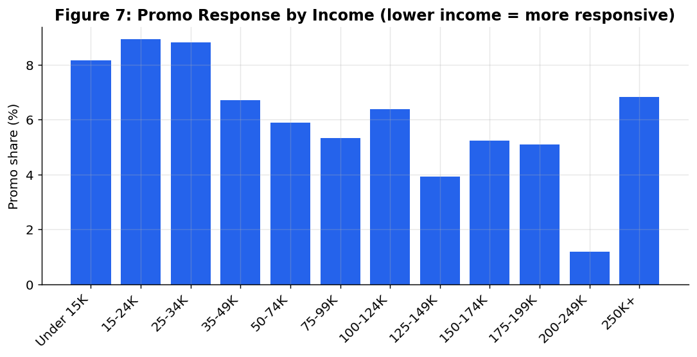
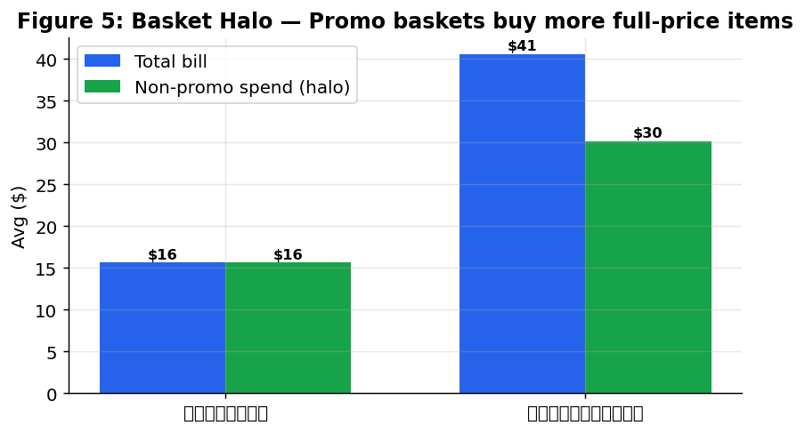
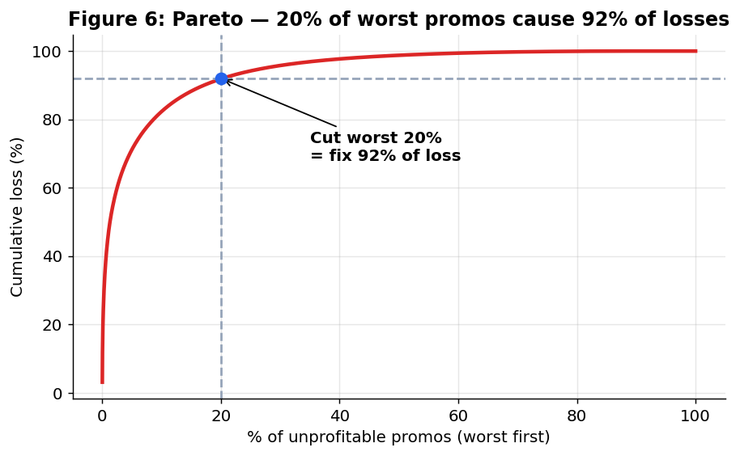

FMCG Trade Promotion Analytics
Analyzing whether retail promotions actually drive profit — using 2.6M real grocery transactions from the dunnhumby “The Complete Journey” dataset.
Stack: Python (pandas, numpy, scipy) · Power BI · Statistical Analysis · Data Modeling
1 · Introduction & Context
The business problem
In modern retail, promotions (price cuts, in-store displays, mailers, coupons) are one of the largest controllable costs — yet most retailers cannot answer a simple question: are these promotions actually profitable?
This project analyzes a real grocery retailer’s transaction data to answer three questions:
- Do promotions drive real incremental sales — or just borrowed/shifted ones?
- Are the discounts worth it (ROI)?
- Who responds most to promotions?
The dataset
dunnhumby — The Complete Journey (real, anonymized grocery data)
- 2,500 households · 92,000 products · ~2 years (102 weeks) · $8.06M total sales
- 8 relational tables (transaction, product, causal, campaign, coupon, demographic)
2 · Data Preparation
Before any analysis, 2.6M raw rows had to be cleaned and structured. Void rows were removed and key flags added — notably is_weighted for weight-based products (quantity in grams, not pieces), which would otherwise distort unit metrics.
import pandas as pd
df = pd.read_csv("transaction_data.csv")
# remove void rows (no quantity = not a real sale)
df = df[df["QUANTITY"] > 0]
# flag special cases instead of deleting them
df["is_free"] = df["SALES_VALUE"] == 0 # giveaways
df["is_weighted"] = df["QUANTITY"] > 1000 # weighed items (grams)
df["total_discount"] = (df["RETAIL_DISC"].abs()
+ df["COUPON_DISC"].abs()
+ df["COUPON_MATCH_DISC"].abs())A promotion flag was derived by joining the causal_data table (every product-store-week with a display or mailer) onto transactions.
✅ Result: clean dataset of 2.58M rows. 20.5% of sales occur while on promotion.
3 · Analysis
3.1 Does it work? (Promotion effectiveness)
True lift was measured against a per-product baseline (average units per store-week when not on promo), removing the bias of popular products being promoted more often.


Two counter-checks confirmed the lift is genuine:
- No pull-forward: sales 2 weeks after a promo were +6.1% vs baseline (not a dip).
- No cannibalization: competing products in the same sub-category rose +6.4%.
3.2 Is it worth it? (Profitability / ROI)
Volume up ≠ profit up. ROI compares incremental gross margin against promotion cost (30% margin assumed, tested at 20/30/40%).
❌ ROI = −85%. For every $100 of discount, only ~$15 returns as margin. Only 2.7% of promoted products are profitable.

3.3 Why does it lose money? (Root cause)
The retailer deliberately promotes its best-sellers. Promoted products have a median sales of $86.9 versus $6.75 for never-promoted items — roughly 13× more. The store is discounting items customers were already going to buy, so the “extra” volume is small relative to the margin given away.

3.4 Who responds? (Segmentation)

3.5 The twist (basket halo)
Before blaming the retailer, a basket-level analysis tested whether promos pull customers in to buy other full-price items.

This reframes the −85% ROI as likely understated — halo profit lands on other products. (Caveat: correlation, not proven causation.)
4 · Solution
4.1 Opportunity sizing
A Pareto analysis of the loss-making promotions showed the damage is highly concentrated.

| Scenario | Result |
|---|---|
| Cut worst 20% of promos | Save $333K (92% of loss) |
| Cut all unprofitable promos | Flip net from −$359K to +$3.2K |
| Halve discount depth | Improve net by +$192K |
4.2 SWOT
| Strengths | Weaknesses |
|---|---|
| Promotions drive real volume (+18.3%) | Promotion ROI deeply negative (−85%) |
| No cannibalization — promos expand the category | Only 2.7% of promos are profitable |
| Strong response from price-sensitive segments | Discounts target best-sellers (low incremental) |
| Positive basket halo (+93%) | Discount depth too high (45% of on-promo sales) |
4.3 Recommendations & A/B test
- Cut the worst 20% of unprofitable promotions (start with GROCERY) — saves $333K.
- Reduce discount depth in high-loss categories.
- Test promoting slow-movers instead of best-sellers.
- Set a new selection rule based on ROI, not sales volume.
Validate before rollout — A/B test: split stores into treatment (shallower discount ~25%) vs control (unchanged) for 8–12 weeks. Primary metric = net profit per promo; secondary = uplift & basket value (monitor the halo). Decide with the experiment, not assumption.
5 · Conclusion
The retailer’s promotions succeed at driving volume (+18.3%) but fail at generating profit (ROI −85%) — the root cause being a strategy of discounting already-popular products. However, a +93% basket-halo effect suggests the true value is higher than the headline number. Rather than declaring the strategy “wrong,” the project recommends cutting the worst 20% of promos (saving $333K), reducing discount depth, and validating changes via controlled A/B testing.
💡 Impact: turn promotions from a $359K money-loser into a profit tool — by deciding with data and experimentation rather than intuition.
Key takeaways: (1) measurement matters more than calculation; (2) never trust the first number — an audit caught a data artifact; (3) find the root cause, not just the symptom; (4) a strong analysis ends with a solution, not just a chart.
Dataset: dunnhumby — The Complete Journey (via Kaggle) · Tools: Python, Power BI